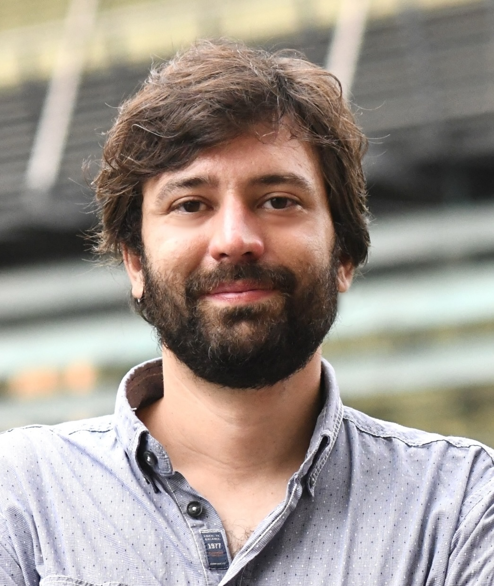
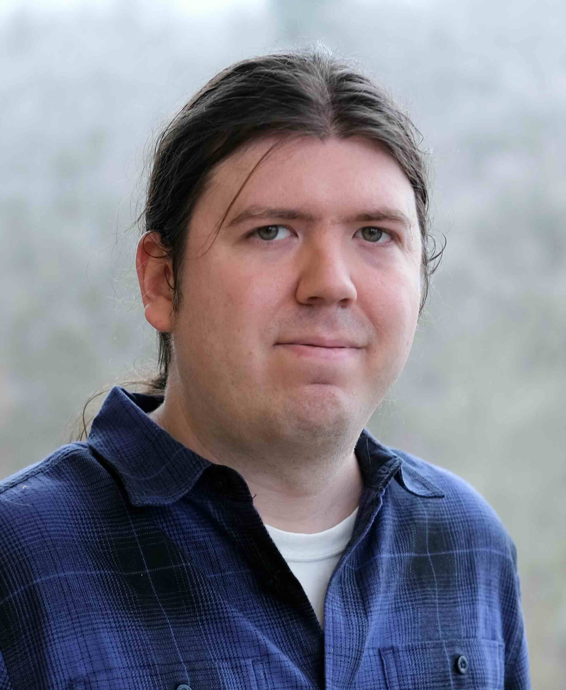

The Principled Systems Group at the Max Planck Institute for Software Systems (MPI-SWS) is led by Andrea Lattuada. We design, implement, and verify systems software, construed broadly[1] and focus on the advancement of verification tooling and methodology for systems verification.
We are interested in systems software verification as a way to substantially improve their safety and reliability, but to achieve this, the verification effort must be commensurate to the value it provides. We build (verified) systems, and extend the available tooling to find and fix inefficiencies.
Jointly with Derek Dreyer's group, we have open positions for PhD Students and Postdocs who are interested in working on Systems Software Verification, in particular focusing on making verification more practical and usable by engineers and on devising and leveraging advanced reasoning techniques. See my research profile for more details on my work, and feel free to get in touch.
Contact: (click to reveal)@mpi-sws.org
If you are interested in working with me on a Master Thesis, HiWi (UdS), or RIL project (cs@max planck, UdS), or similar, please get in touch. I receive a lot of emails. I try and respond to everyone — if I have not gotten back to you within a week, please send me a ping.
 We co-lead the Verus project, Verus is a tool to rapidly verify the correctness of systems code written in Rust.
The Verus project involves members from VMware Research, Microsoft Research, Carnegie Mellon University, ETH Zurich, University of Washington, University of Michigan, University of Wisconsin-Madison, and others.
There are a number of research and industry projects using and developing Verus: verus-lang.github.io/verus/publications-and-projects/.
We co-lead the Verus project, Verus is a tool to rapidly verify the correctness of systems code written in Rust.
The Verus project involves members from VMware Research, Microsoft Research, Carnegie Mellon University, ETH Zurich, University of Washington, University of Michigan, University of Wisconsin-Madison, and others.
There are a number of research and industry projects using and developing Verus: verus-lang.github.io/verus/publications-and-projects/.
Members



Affiliated Researchers and Collaborators


Recent Peer-reviewed Publications
-
SOSP 2024 ⸺ Distinguished Artifact AwardVerus: A Practical Foundation for Systems Verification, Andrea Lattuada, Travis Hance, Jay Bosamiya, Matthias Brun, Chanhee Cho, Hayley LeBlanc, Pranav Srinivasan, Reto Achermann, Tej Chajed, Chris Hawblitzel, Jon Howell, Jacob R. Lorch, Oded Padon, Bryan ParnoThe 30th Symposium on Operating Systems Principles
-
OSDI 2024 ⸺ Jay Lepreau Best Paper AwardAnvil: Verifying Liveness of Cluster Management Controllers, Xudong Sun, Wenjie Ma, Jiawei Tyler Gu, Zicheng Ma, Tej Chajed, Jon Howell, Andrea Lattuada, Oded Padon, Lalith Suresh, Adriana Szekeres, Tianyin Xu18th USENIX Symposium on Operating Systems Design and Implementation
-
OOPSLA 2023Verus: Verifying Rust Programs using Linear Ghost Types, Andrea Lattuada, Travis Hance, Chanhee Cho, Matthias Brun, Isitha Subasinghe, Yi Zhou, Jon Howell, Bryan Parno, Chris HawblitzelProceedings of the ACM on Programming Languages
-
HotOS 2023Beyond isolation: OS verification as a foundation for correct applications, Matthias Brun, Reto Achermann, Tej Chajed, Jon Howell, Gerd Zellweger, Andrea LattuadaThe 19th Workshop on Hot Topics in Operating Systems
-
OSDI 2023Sharding the State Machine: Automated Modular Reasoning for Complex Concurrent Systems, Travis Hance, Yi Zhou, Andrea Lattuada, Reto Achermann, Alex Conway, Ryan Stutsman, Gerd Zellweger, Chris Hawblitzel, Jon Howell, Bryan Parno17th USENIX Symposium on Operating Systems Design and Implementation
-
OOPSLA 2022 ⸺ Distinguished Paper AwardLinear Types for Large-Scale Systems Verification, Jialin Li, Andrea Lattuada, Yi Zhou, Jonathan Cameron, Jon Howell, Bryan Parno, Chris HawblitzelProceedings of the ACM on Programming Languages
-
ITP 2021Verified Progress Tracking for Timely Dataflow [Technical Report], Matthias Brun, Sára Decova, Andrea Lattuada, Dmitriy TraytelThe International Conference on Interactive Theorem Proving
-
OSDI 2020Storage Systems are Distributed Systems (So Verify Them That Way!), Travis Hance, Andrea Lattuada, Chris Hawblitzel, Jon Howell, Rob Johnson, Bryan Parno14th USENIX Symposium on Operating Systems Design and Implementation
[1] Inspired by Systopia's definition of the scope of Systems research.